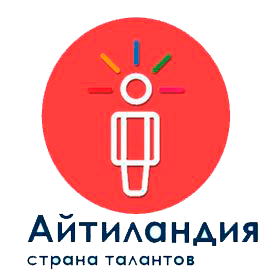

Спорт
Сайт VORONС самого детства я занимаюсь спортом. Мне всегда нужно было место, где я мог выплеснуть энергию и заняться тяжёлой физической нагрузкой.
Для тех, кому интересно узнать больше о моих спортивных хоббиКомпьютеры и Интернет
Компьютер для меня — не просто техника, а целый мир возможностей. Он помогает мне учиться, создавать, общаться и развиваться. С его помощью я открыл для себя программирование, освоил графику, изучил основы монтажа и даже попробовал создавать игры. Мне нравится разбираться в новых технологиях, искать решения задач и постоянно учиться чему-то новому. Компьютер стал моим хобби, потому что каждый раз, садясь за него, я чувствую, что открываю двери в будущее.
Айтиландия
 Сайт нашей любимой АйтиландииАйтиландия была важной частью моей жизни 5 лет. Я без пропусков приходил сюда, находил новые знакомства, получал новые знания и расширял свой кругозор.
Музыка
Музыка сопровождает меня уже 4-5 лет. Она всегда была рядом, меня вдохновляла, дарила эмоции и помогала открывать новые миры.

Подробнее о моих музыкальных вкусах